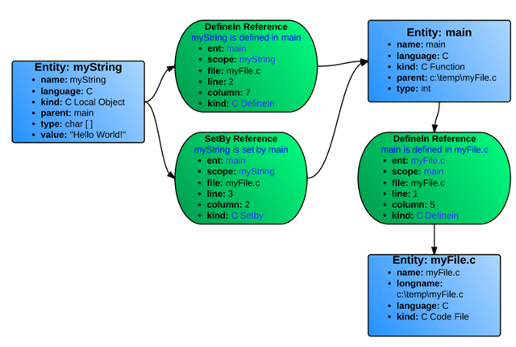

Welcome to OpenUnderstand
An open-source implementation of Understand Python API. Visit source code.
Introduction
Understand [1] has an extensive API to let developers query the data it captures about their code. It has three flavors: Perl, Python, and C. We work with Python API. All three implementations of the Understand APIs are read-only. They do not modify the Understand project information. If there is a need to modify Understand project information programmatically, the 'und' tool must be used. Unfortunately, the Understand API source code is not publicly available, making it difficult to change and reuse in a different environment.
This project aims to provide an open-source implementation of the Understand Python API to analyze the source codes. We primarily focus on implementing the API for Java programs using Python programming languages and compiler tools such as ANTLR [2]. To develop an open-source implementation of Understand Python API, we look at the structures used by Understand for analyzing source codes.
Project layout
Entity and reference
Most of the data captured by Understand involves Entities and References.
- Entity: An Entity is anything in the code that Understand captures information on: i.e., A file, a class, a variable, a function, etc. In the Perl API, Entities are represented with the Understand::Ent class. In Python, it is the Understand.Ent class.
- Reference: A specific place where an entity appears in the code. A reference is always defined as a relationship between two entities. e.g., function Bar is called on line 14 of function Foo. In the Perl API, References are represented with the Understand::Ref class. In Python, it is the Understand.Ref class.
Every entity and reference have a unique set of attributes that can be queried by the API. A few of the attributes you can view for an entity would be its name, its type, any associated comments, what kind of entity it is, and if it has them: its parent entity and its parameters. On the other hand, a reference would have both of the entities associated with it as well as the file, line, and column where the reference occurs and what kind of reference it is. To help visualize this, let's use this simple C code:
myFile.c
void main(){
char myString[];
myString = “Hello World!”;
}
Understand would identify three entities (blue) and three references (green), shown in Figure 1.

Figure 1. Understand data structure for a simple C code
Since all references are relationships between two objects, the references are actually stored going in both directions. Hence, each reference kind has an opposite: "Define" and "DefineIn", "Set" and "SetBy", "Call" and "Callby", etc. The same entities of Figure 1 with their reverse references are shown in Figure 2.

Figure 2. References of Figure 1 in inverse directions
Entity kinds
A comprehensive list of OpenUnderstand entity kinds for Java programming language can be found on Entity kind page
Reference kind
A comprehensive list of OpenUnderstand reference kinds for Java programming language can be found on Reference kind page
Architecture
Database schema ERD
Some architectural notes
- Multiple analysis passes are required to capture all entities and references kinds
- OpenUnderstand analysis project files in at least two passes.
- File is the root since the parent of files is None.
- Parent of a package is its first file according to alphabetical sort of all files in the package.
- Parent of other entities is their definition place.
- Only variables have value.
- Classes that are not in project are Unknown.
References
References [1] SciTools, “Understand,” 2020. https://www.scitools.com/ (accessed Sep. 11, 2020).
[2] T. Parr and K. Fisher, “LL(*): the foundation of the ANTLR parser generator,” Proc. 32nd ACM SIGPLAN Conf. Program. Lang. Des. Implement., pp. 425–436, 2011, doi: http://doi.acm.org/10.1145/1993498.1993548.
[3] N. Tsantalis and A. Chatzigeorgiou, “Identification of move method refactoring opportunities,” IEEE Trans. Softw. Eng., vol. 35, no. 3, pp. 347–367, May 2009, doi: 10.1109/TSE.2009.1.